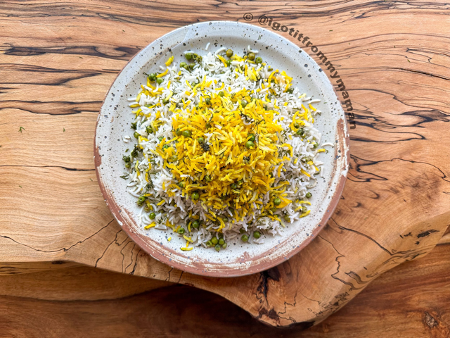

Polo Nokhod

A Dish Prepared Many Different Ways
Polo nokhod is a dish prepared many different ways in Iran. Typically, people will be baised and say
the version of the dish they grew up with and were exposed to is the best, but in all honesty, all versions of this
delicious, rice-based dish taste amazing and will leave you begging for more!
Ingredients
- 2 cups basmati rice
- 0.75 cup garbanzo beans
- Cumin to taste
- 4 tbbsp vegetable oil
- 0.25 tsp saffron
- Salt to taste
Preperation
- Wash your rice with water 3-4 times and then add the washed rice to a pot with 3 cups of cold water. Season the rice with salt to your liking.
- Add 2-4 tbsp of vegetable oil to the pot and bring to a boil over medium heat. Once holes start forming in the rice, add your garbanzo beans and cumin int the pot.
- Give it a quick stir and then pour your saffron water in at least 4 different spots in the pot.
- Now, reduce the temperature to low and put on the lid. You can cover the lid with a clean kitchen towel to absorb even more moisture from the rice. Let it cook slowly for about 40 minutes. The longer you leave it, the darker and crispier your tadig (rice crust) will become.
- After cooking, your rice is ready to serve. You can serve this rice with your favorite stew, lamb shank, or even add lamb into the rice cooking process.